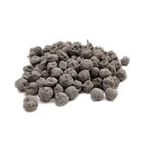

होम / केर

केर का भाव आज | Ker Berries Rate Today
आजकल केर के भाव चल रहे हैं। यह शहर और थोक बाज़ार का भाव है, किसी मंडी की नीलामी का रिकॉर्ड नहीं।
नीचे दिए गए शहरों में केर के आजकल चल रहे भाव दिए हैं। यह शहर और थोक बाज़ार का भाव है, किसी मंडी की नीलामी का रिकॉर्ड नहीं।
केर के भाव आज: राजस्थान में केर का मंडी भाव, केर सांगरी और खेती की जानकारी
राम राम किसान भाइयों! केर राजस्थान की मरुधरा से जुड़ी पारंपरिक शुष्क उपज है। इस पेज पर उपलब्ध सत्यापित मंडी रिकॉर्ड, उनकी तारीख और क्विंटल की इकाई में भाव देखे जा सकते हैं। केर के भाव आज कितने हैं, राजस्थान में केर का मंडी भाव क्या चल रहा है, केर का भाव प्रति किलो और प्रति क्विंटल कितना है और भाव में तेजी-मंदी क्यों आती है, इन सब सवालों के जवाब इस लेख में मिलेंगे।
केर सिर्फ़ एक जंगली झाड़ी का फल नहीं है। यह पश्चिमी राजस्थान के किसानों और ग्रामीणों के लिए नकद आमदनी का मज़बूत ज़रिया है। इसकी खास खटास और पारंपरिक खान-पान में इसकी जगह के कारण इसकी माँग बनी रहती है। राजस्थान के मशहूर पंचकूट और पारंपरिक अचार में केर की मुख्य भूमिका होती है।
केर क्या है? कैर, केरिया, करील, टींट और डेला
केर का वैज्ञानिक नाम Capparis decidua है। अलग-अलग इलाकों में इसके अलग नाम हैं। राजस्थान में इसे केर या कैर, मारवाड़ में कच्चे फल को केरिया, कई जगह करील, हरियाणा में टींट या डेला और अंग्रेज़ी में केपर बेरी कहते हैं। इसीलिए लोग इंटरनेट पर केर का भाव, कैर का भाव और केरिया का भाव, तीनों तरह से खोजते हैं।
केर का पौधा आम फलदार पेड़ों से बहुत अलग दिखता है। यह काँटेदार, बहुत शाखाओं वाली झाड़ी या छोटा पेड़ है, जिसकी ऊँचाई आमतौर पर 3 से 5 मीटर होती है। यह गर्म, शुष्क और कम पानी वाले इलाकों में भी अच्छी तरह जीवित रहता है, इसीलिए इसे थार मरुस्थल की पहचान माना जाता है।
केर का वैज्ञानिक नाम क्या है?
केर का वैज्ञानिक नाम Capparis decidua है। यह पौधा गर्म और शुष्क इलाकों में प्राकृतिक रूप से मिलता है। अंग्रेज़ी में इसे केपर बेरी भी कहा जाता है। राजस्थान के अलावा पंजाब, हरियाणा और गुजरात के शुष्क तथा अर्ध-शुष्क क्षेत्रों में भी यह पाया जाता है।
केर का फल कैसा होता है?
केर के फल छोटे और गोल होते हैं। कच्चे फल हरे रंग के होते हैं और पकने पर रंग गुलाबी से लाल की ओर जाता है। कच्चे फल से सब्ज़ी और अचार बनते हैं और पके फल भी उपयोग में आते हैं।
केर कब मिलता है? केर का सीज़न
केर में साल में दो बार फल आते हैं। फूल मार्च-अप्रैल और अगस्त-सितंबर में आते हैं और फल मई तथा अक्टूबर तक पक जाते हैं। इसलिए बाज़ार में गर्मी का सीज़न (लगभग मार्च से जून) मुख्य रहता है और अक्टूबर के आसपास दूसरा सीज़न आता है, जब आवक कम रहने से कई बार भाव अच्छे मिलते हैं।
केर के भाव में क्या देखें?
केर की सफाई, आकार, सूखापन और lot की एकरूपता के अनुसार खरीदारों की पसंद बदल सकती है। अलग मंडियों के रिकॉर्ड की तुलना करते समय तारीख और इकाई एक जैसी रखें।
केर का बाज़ार भाव एक जैसा नहीं रहता। यह फल के आकार, गुणवत्ता, ताज़गी, कच्ची या सूखी अवस्था, सफ़ाई, उपलब्धता और माँग पर निर्भर करता है। किसी एक मंडी का भाव पूरे राजस्थान के केर बाज़ार का प्रतिनिधि नहीं होता।
केर के भाव में तेजी-मंदी क्यों आती है?
- आकार और ग्रेडिंग: बारीक (छोटा) दानेदार केर की माँग अचार और खास पकवानों में सबसे ज़्यादा रहती है, इसलिए इसका भाव आमतौर पर ऊँचा मिलता है। मोटा केर छँटाई के बाद अपेक्षाकृत कम भाव पर बिकता है।
- कच्चा या सूखा केर: कच्चे केर की आवक सीज़न में जोधपुर, बीकानेर, नागौर, बाड़मेर और फलोदी जैसी स्थानीय मंडियों में सीधी होती है। सूखा केर साल भर सुरक्षित रहता है और उसका भाव कई गुना ज़्यादा रहता है।
- कड़वाहट निकालने और सुखाने की गुणवत्ता: साफ़-सुथरा, बिना कंकड़-पत्थर, धूल और डंठल वाला माल व्यापारी सबसे ऊँचे भाव पर लेते हैं।
- मंडी में आवक: आवक ज़्यादा होने पर भाव दबाव में आ सकते हैं और आवक कम होने पर ऊपर जा सकते हैं।
- मौसम और पैदावार: केर प्राकृतिक रूप से मिलने वाला उत्पाद है। अच्छी बारिश के बाद पैदावार बढ़ने पर भाव नरम रह सकते हैं, जबकि सूखे साल में ऊँचे रह सकते हैं।
- तुड़ाई की मज़दूरी: केर काँटेदार झाड़ी पर लगता है, इसलिए तुड़ाई की मेहनत भी भाव में जुड़ती है।
- देश-विदेश की माँग: मुंबई, दिल्ली, अहमदाबाद और बेंगलुरु जैसे शहरों में, विदेशों में बसे प्रवासी भारतीयों में और राजस्थानी कैटरिंग व होटलों में केर की माँग रहती है।
- केर-सांगरी की माँग, शादी-विवाह और त्योहार: विशेष अवसरों और सीज़न में माँग बढ़ने पर भाव चढ़ सकते हैं।
- व्यापारियों और खरीदारों की माँग: अलग-अलग मंडियों में खरीदार और आवक अलग होती है, इसलिए भाव भी अलग रहता है।
बारीक और मोटे केर के भाव में अंतर क्यों होता है?
केर के भाव में सबसे बड़ा अंतर उसके आकार से आता है। बारीक यानी छोटा केर, जिसे दानेदार या प्रीमियम केर भी कहा जाता है, अचार और खास पकवानों के लिए सबसे ज़्यादा पसंद किया जाता है। इसकी माँग ज़्यादा होने से मंडियों में इसका भाव आमतौर पर सबसे ऊँचा मिलता है। मोटे यानी बड़े आकार के केर की माँग अपेक्षाकृत कम रहती है, इसलिए छँटाई के बाद उसका भाव कम मिलता है।
इसीलिए तुड़ाई के समय ही बारीक और मोटे केर को अलग-अलग रखना फायदेमंद रहता है। दोनों को मिला देने पर बारीक केर का भी पूरा भाव नहीं मिल पाता।
कच्चे और सूखे केर के भाव में फर्क क्यों?
कच्चा केर तोड़ने के बाद जल्दी खराब होने लगता है, इसलिए ज़्यादातर किसान उसे उसी दिन या एक-दो दिन में बेच देते हैं। सूखा केर पहले कड़वाहट निकालकर फिर धूप में सुखाया जाता है। इससे वह महीनों तक चलता है और वज़न घट जाता है। मेहनत ज़्यादा लगने, वज़न कम होने और साल भर उपलब्ध रहने के कारण सूखे केर का प्रति किलो भाव कच्चे केर से कई गुना ज़्यादा रहता है।
केर की कड़वाहट कैसे निकाली जाती है?
केर में प्राकृतिक कड़वाहट होती है, इसलिए इसे तोड़कर सीधे नहीं खाया जाता। पारंपरिक तरीके में मटके में छाछ और नमक का पानी डालकर केर को कई दिन भिगोया जाता है। सब्ज़ी या अचार से पहले भी इसे 4-5 दिन नमक या छाछ में भिगोकर रखा जाता है। इसके बाद इसे साफ़ जगह पर धूप में अच्छी तरह सुखाया जाता है। ठीक से संसाधित माल का भाव बेहतर मिलता है।
केर को सुखाकर और सुरक्षित कैसे रखें?
राजस्थान के पारंपरिक खान-पान में ऐसे खाद्य पदार्थों का बड़ा महत्व रहा है जो लंबे समय तक सुरक्षित रह सकें। केर को भी कड़वाहट निकालने के बाद सुखाकर साल भर उपयोग में लिया जाता है। सूखे केर में कंकड़-पत्थर, धूल, डंठल और नमी नहीं होनी चाहिए, क्योंकि यही चीज़ें भाव गिराती हैं।
सूखे केर को नमी रहित साफ़ बोरियों या एयरटाइट बैग में रखना बेहतर रहता है। नमी रह जाने पर फफूँद लग सकती है, जिससे माल खराब हो जाता है और भाव भी कम मिलता है।
केर-सांगरी का भाव इतना ज़्यादा क्यों होता है?
केर और सांगरी दोनों प्राकृतिक रूप से उगने वाले उत्पाद हैं। इनकी तुड़ाई हाथ से काँटों के बीच करनी पड़ती है, पैदावार सीमित होती है और कड़वाहट निकालने व सुखाने में मेहनत लगती है। इसके ऊपर देश-विदेश में राजस्थानी खाने की माँग रहती है, खासकर शादी-विवाह, त्योहार और कैटरिंग में। इन सब कारणों से सूखी केर-सांगरी का भाव आम सब्ज़ियों और उपज के मुकाबले काफ़ी ऊँचा रहता है।
केर और सांगरी में क्या अंतर है?
केर-सांगरी राजस्थान की सबसे मशहूर पारंपरिक सब्ज़ियों में से एक है। केर झाड़ी पर लगने वाला छोटा गोल फल है, जबकि सांगरी खेजड़ी के पेड़ पर लगने वाली पतली, लंबी फली है। दोनों को मिलाकर सब्ज़ी बनाई जाती है, इसीलिए बाज़ार में दोनों के भाव साथ-साथ पूछे जाते हैं। लोग केर का भाव, केर सांगरी का भाव और कैर की कीमत एक साथ खोजते हैं, और कई बार इनमें सूखे केर का भाव भी पूछा जा रहा होता है।
केर का भाव प्रति किलो और प्रति क्विंटल कैसे निकालें?
केर की खरीद-बिक्री अलग-अलग बाज़ारों में अलग इकाइयों में हो सकती है, इसलिए प्रति किलो और प्रति क्विंटल भाव का अंतर समझना ज़रूरी है। 1 क्विंटल में 100 किलोग्राम होते हैं। अगर किसी जगह केर का भाव ₹X प्रति किलो है, तो समान दर पर प्रति क्विंटल कीमत ₹X × 100 होगी। असल मंडी व्यापार में गुणवत्ता और माल की हालत के कारण खरीद दर अलग हो सकती है।
इसलिए बेचने से पहले न्यूनतम, अधिकतम और प्रचलित भाव तीनों देखें। केवल अधिकतम भाव देखकर पूरा माल बेचने का फैसला न लें।
केर का भाव कहाँ और कैसे देखें?
केर का भाव देखने के लिए इसी पेज पर दी गई मंडी भाव की सारणी सबसे आसान तरीका है। भाव देखते समय तीन बातों का ध्यान रखें: पहली, रिकॉर्ड की तारीख क्या है। दूसरी, भाव किस इकाई में है, किलो में या क्विंटल में। तीसरी, भाव कच्चे केर का है या सूखे का। इन तीनों में से कोई एक अलग हो तो दो भावों की सीधी तुलना गलत नतीजा दे सकती है।
किसी एक मंडी के भाव के भरोसे पूरा माल बेचने के बजाय अपनी नज़दीकी मंडी और दूसरी मंडियों के भाव मिलाकर देखना बेहतर रहता है।
केर के फल के उपयोग
- केर-सांगरी की सब्ज़ी
- पंचकूट
- केर का अचार, नमक, तेल और मसालों के साथ
- सूखे केर की सब्ज़ी
- सूखे केर से कढ़ी
- दही या छाछ के साथ बनी केर की सब्ज़ी
- अन्य पारंपरिक राजस्थानी व्यंजन और मसालेदार खाद्य उत्पाद
केर के पारंपरिक स्वास्थ्य लाभ
पारंपरिक रूप से केर और सांगरी को पौष्टिक माना जाता है और आयुर्वेदिक चर्चाओं में इसका ज़िक्र होता है। फल के साथ इसकी छाल और जड़ें भी घरेलू उपयोग में आती रही हैं। यह सामान्य जानकारी है, चिकित्सकीय सलाह नहीं। किसी रोग में उपयोग से पहले डॉक्टर या वैद्य से सलाह ज़रूर लें।
बेचने से पहले ध्यान रखें
- उपज को साफ और अच्छी तरह सूखा रखें।
- गीली या मिली-जुली उपज को अलग lot में रखें।
- मंडी भाव के साथ उसी दिन की तारीख और गुणवत्ता भी देखें।
- तुड़ाई के समय ही बारीक और मोटे केर को अलग-अलग टोकरियों में रखें। मिलाने से बारीक केर का भी सही भाव नहीं मिलता।
- कच्चे और पके फल अलग रखें, क्योंकि दोनों का भाव अलग होता है।
- सीज़न में आवक ज़्यादा होने से भाव दबाव में हों, तो कड़वाहट निकालकर केर सुखाएँ और सुरक्षित रखें। ऑफ-सीज़न में सूखा केर बेचने पर आमतौर पर बेहतर भाव मिलता है।
- नमी रहित साफ़ बोरियों या एयरटाइट बैग में पैक करें। नमी से फफूँद लग सकती है और भाव गिर सकता है।
- एक ही मंडी या व्यापारी पर निर्भर न रहें, दो-तीन जगह भाव पूछें।
- तौल के समय खुद मौजूद रहें।
केर की खेती के लिए कैसी जलवायु और ज़मीन चाहिए?
केर गर्म और शुष्क जलवायु के अनुकूल पौधा है। यह कम पानी और कठिन परिस्थितियों में भी जीवित रह सकता है और रेतीली, पथरीली या कम उपजाऊ ज़मीन पर भी टिक जाता है। इसीलिए इसे बंजर और कम देखभाल वाली ज़मीन के लिए उपयुक्त माना जाता है।
यह मुख्य रूप से राजस्थान के शुष्क और मरुस्थलीय क्षेत्रों का पौधा है। ICAR के शोध के अनुसार यह राजस्थान, पंजाब, हरियाणा और गुजरात के शुष्क तथा अर्ध-शुष्क क्षेत्रों में पाया जाता है।
केर की खेती किसानों के लिए क्यों फायदेमंद है?
जहाँ आम फसलों के लिए पानी सबसे बड़ी चुनौती है, वहाँ केर जैसे पौधे टिक सकते हैं। यह खाद्य उत्पाद के साथ-साथ ग्रामीण इलाकों में अतिरिक्त आमदनी का साधन भी है। ICFRE के अनुसार केर का फल ग्रामीणों की पूरक आय का स्रोत रहा है और इससे अचार जैसे मूल्यवर्धित उत्पाद बनाए जाते हैं।
कई किसान इसे खेत की मेड़ या खाली पड़ी ज़मीन पर लगाकर अतिरिक्त आय का ज़रिया बनाते हैं। पौधा लगने के बाद फल आने में समय लगता है, इसलिए यह लंबे समय का निवेश है। इलाके, पौधे की स्थिति, उत्पादन और बाज़ार के हिसाब से काफ़ी अंतर हो सकता है, इसलिए खेती शुरू करने से पहले स्थानीय कृषि विशेषज्ञ से सलाह लें।
केर के बारे में खास बातें
- वैज्ञानिक नाम: Capparis decidua
- स्थानीय नाम: केर, कैर, करील, केरिया, टींट, डेला
- अंग्रेज़ी नाम: केपर बेरी
- मुख्य क्षेत्र: राजस्थान सहित शुष्क और अर्ध-शुष्क क्षेत्र
- फल का समय: साल में दो बार, मई और अक्टूबर के आसपास
- प्रमुख उपयोग: सब्ज़ी, अचार, कढ़ी, केर-सांगरी और पंचकूट
- विशेषता: कम पानी और गर्म, शुष्क परिस्थितियों में जीवित रहने की क्षमता
किसान भाइयों के लिए ज़रूरी बात
राजस्थान के रेगिस्तानी इलाके की यह उपज कठिन परिस्थितियों में भी किसानों को मज़बूत आर्थिक सहारा देती है। केर का भाव, केर-सांगरी की माँग और पारंपरिक उपयोग इसे आम फलों से अलग बनाते हैं। केर बेचने की तैयारी करते समय अपनी नज़दीकी मंडी का आज का भाव, आवक और माल की गुणवत्ता के अनुसार चल रहा रेट ज़रूर पता करें।
नोट: मंडी भाव में रोज़ बदलाव संभव है। असल खरीद-बिक्री दर गुणवत्ता, आवक, माँग और स्थानीय व्यापारिक परिस्थितियों के अनुसार अलग हो सकती है।
अक्सर पूछे जाने वाले सवाल
केर और सांगरी में क्या अंतर है?
केर काँटेदार झाड़ी पर लगने वाला छोटा गोल फल है, जबकि सांगरी खेजड़ी के पेड़ की लंबी पतली फली है। दोनों का उपयोग केर-सांगरी की सब्ज़ी में होता है।
केर का भाव देखते समय क्या जाँचें?
मंडी रिकॉर्ड की तारीख, भाव की इकाई और माल कच्चा है या सूखा, यह जाँचें। अलग अवस्था और तारीख वाले भाव की सीधी तुलना न करें।
केर का उपयोग किस काम में होता है?
केर का उपयोग पारंपरिक केर-सांगरी की सब्ज़ी, पंचकूट और अचार में होता है।